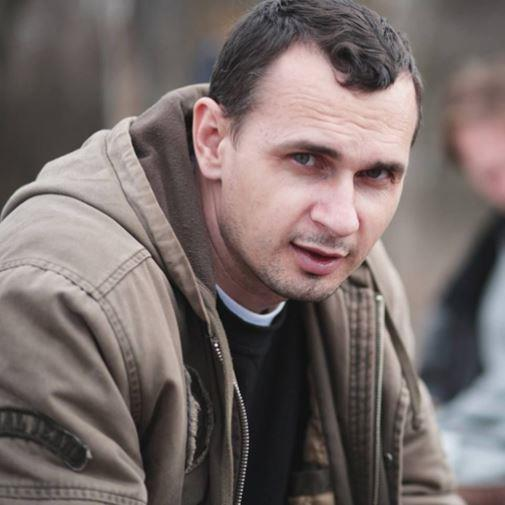
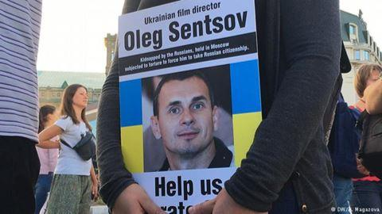
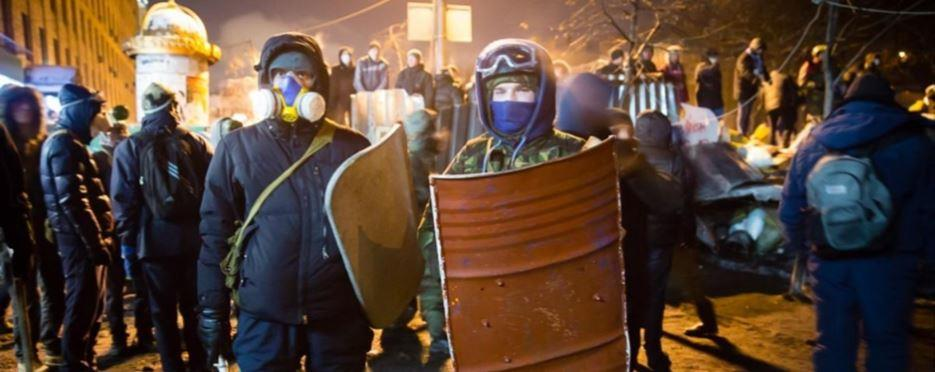
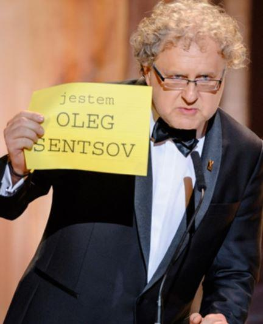

Oleg Sentsov est un cinéaste russo-ukrainien partisan de l'« Euro-Maïdan » qui est emprisonné depuis août 2015 en Russie où il purge une peine de 20 ans de prison. Il a été accusé d'avoir participé à la préparation d'actes terroristes orchestrés par le groupe néo-nazi ukrainien Pravy Sektor. Sa condamnation avait, à l'époque, aussitôt été dénoncée par les pays Occidentaux. Récemment, il a entamé une grève de la faim par laquelle il exige la libération des prisonniers politiques ukrainiens détenus en Russie, sous-entendu, accusés d'avoir eux-mêmes dirigé des actions contre les autorités russes.
Pour faire simple, Oleg Sentsov est un fervent partisan d'une Crimée « nationaliste ukrainienne » et, pour ce faire, prêt aux actions violentes... Son rôle médiatique artistique, néanmoins, lui offre une vitrine et un sentiment compassionnel non négligeable de la part des peuples, des médias et des gouvernements occidentaux...
Alors, comme nous l'avons déjà fait à maintes reprises, revenons à nouveau sur ce fameux « dossier ukrainien »...
Au sens institutionnel du terme, l'Ukraine n'avait jamais existé avant 1991. Ce pays est né artificiellement en une nuit, la nuit du passage de l'URSS à la CEI. Si on compare, la France, elle, s'est construite sur mille ans ! L'Ukraine possède une culture, une langue (très proches du russe...). L'Ukraine a vu passer des princes et des princesses ukrainiennes mais l'Ukraine n'a jamais été une royauté, un Empire, un état indépendant au sens propre du terme. Toutes les terres qui bordent le nord de la Mer noire virent passer une quantité phénoménale de conquérants « trublions », Mongols, Tatars, etc... Ces terres enfin furent administrées par l'Empire tsariste russe, pacifiées face aux Ottomans sous Catherine II puis développées au niveau industriel et urbain par là-suite. Les villes d'Odessa et Sébastopol virent arriver des paysans ukrainiens issus de l'abolition du servage, des Russes, des Juifs d'Europe centrale, des Allemands, des Polonais. C'était à l'époque, vers les XVIIIe et XIXe siècles, une des zones les plus cosmopolites, culturelles et économiques d'Europe, tournées vers les « mers chaudes » via la Mer Noire.
Auparavant, l'Ukraine avait surtout été partagée à l'ouest par les grands Empires lituaniens et polonais. L'ensemble est et sud relevant plus de la Russie. Lors de la guerre civile qui précéda l'URSS (1917/1922), l'Ukraine était envahie par l'Allemagne et était dirigée depuis Berlin ! Les Hongrois et les Polonais n'attendaient qu'un effondrement des troupes russes « blanches » et « rouges » pour s'emparer d'un maximum de ses terres. Malgré la paix de Brest-Litovsk en 1917, l'Ukraine initialement tsariste, relevait toujours de la zone d'influence russe. Le problème s'est passé aussi chez nous avec l'Alsace-Lorraine qui revint à la France de la IIIe République en 1919 alors que nous n'étions pourtant plus sous le Second Empire !
Suite à l'effondrement allemand ainsi que des « Russes blancs », l'URSS vit le jour, intégrant de manière - il faut le dire - totalement arbitraire, cette région d'Ukraine sous le dénominatif de République Socialiste Soviétique d'Ukraine. Pour autant, ce n'était pas un pays. Comme auparavant, ce n'était qu'une région. L'erreur fondamentale c'est de confondre une république de l'ex-URSS avec un état indépendant ! L'autre erreur fondamentale, c'est de voir les nouvelles frontières issues de la dislocation de l'URSS en 1991 comme « unes et indivisibles » alors même que nous avons eu à nouveau sous les yeux une carte postale noire et blanche de 1922 qui resurgissait tout à coup, avec autant de régions qui n'avaient jamais vraiment été administrées auparavant, comme dans le Caucase, comme en Ukraine, puis qui le furent mais sous l'URSS avant de devenir indépendantes du jour au lendemain avec toutes les complications que cela implique ! Maintes fois nous avons déjà répété cette même histoire mais nous la répéterons encore maintes fois s'il le faut car c'est un diaporama historique indispensable pour comprendre la problématique actuelle.
Entre 1991 et 2013, plutôt que de maudire les Russes, nous ferions mieux de les remercier ! Ils ont réussi à redresser leur pays tout en soutenant leur voisin ukrainien ! Énormément de familles mixtes russo-ukrainiennes, énormément d'investissements privés russes en Ukraine, sans parler des grands complexes industriels civils ou militaires russo-ukrainiens plus le soutien énergétique russe à l'Ukraine ! Et que s'est-il passé en 2013 ? Cette fameuse révolution de l'Euro-Maïdan à Kiev dont les ficelles étaient franchement trop grosses pour ne pas voir que le mouvement était dirigé par Washington et orchestré par la CIA pour couper le monde en deux et faire passer l'Europe sous la domination économique états-unienne !
Alors, depuis, on nous a ressorti les néo-nazis que l'on a transformé en bataillons ultra-nationalistes, 10 000 morts au Donbass, notamment des femmes, des enfants, des villages martyres... Quant à la Crimée, elle avait été détachée de manière symbolique par Khrouchtchev en 1953 pour remercier « Les Cosaques qui, au XVIIe siècle, s'étaient ralliés à l'Empire russe contre la Pologne » ! On voit bien toute la portée symbolique - ou même aucune d'ailleurs ! - mais la Crimée était une terre russe, elle l'est restée malgré elle, sauf qu'à l'époque soviétique cela ne posait aucun problème car tout le monde était soviétique ! En 1991, elle s'est réveillée terre russe en zone ukrainienne fantoche !
L'Ukraine a, de tout temps, été une région partagée par une multitude de peuples et de cultures. On en a fait un état ukrainien ultra-nationaliste pour ne servir que de ténébreux intérêts économiques états-uniens et tout le monde est tombé dans le panneau par poutinophobie primaire ! La question fondamentale que chacun devrait se poser est la suivante : « Pourquoi fait-on constamment pression sur Moscou concernant la crise en Ukraine alors même que Petro Porochenko n'a jamais entamé la réforme constitutionnelle visant à faire une fédération de son pays, pierre angulaire des Accords de Minsk II et seule solution pour une paix durable ? ». On a le droit de soutenir le cinéaste Oleg Sentsov, mais, au moins, que l'on essaye d'abord de répondre à cette question !
De même, bon nombre de partisans d'une Ukraine ultra-nationaliste et du retour de la Crimée en Ukraine avancent la date de 1945 et le Mémorandum de Budapest de 1994 pour se justifier. On a, par exemple, entendu à l'époque, François Hollande, dire que les frontières étaient immuables depuis la fin de la 2nde Guerre mondiale. C'est consternant quand on sait qu'à l'époque les frontières étaient celles de l'URSS et certainement pas d'une Ukraine indépendante ! Doublement consternant quand on sait aussi que la Crimée, à cette époque, était encore rattachée à la République Socialiste Fédérative de Russie et non à la République Socialiste Soviétique d'Ukraine ! Le mieux serait de revenir aux fondements de l'URSS, soit les années 1921 / 1922 et se poser la question de savoir qui se passait à cette époque. Je renvoie chacun à mon livre « C'était quoi l'Ukraine entre 1917 et 1921 ? ». Une région bouleversée par la 1ère Guerre mondiale, l'envahissement austro-allemand et la guerre civile faisant suite à la chute du Tsar. Une multitude de courants tous balayés par le vent de l'histoire... Et si nous revenons encore quelques années en arrière, et bien l'Ukraine était simplement une terre russe et la boucle est bouclée ! Concernant le Mémorandum de Budapest signé en 1994, il stipule que l'Ukraine obtient des garanties sur son intégrité territoriale (en échange, d'ailleurs, du retour en Russie des têtes nucléaires basées sur son sol à l'époque soviétique afin qu'elles soient démantelées). Ce mémorandum est respectable et devrait être respecté. « Aurait dû » être respecté ! Le problème que ce mémorandum ne prévaut que dans le cadre de nations libres de leur choix politiques, libres de leurs choix économiques, libres de leurs alliances politiques et libres de leurs alliances économiques. Et, au moment où l'Ukraine s'apprêtait très certainement à intégrer le marché eurasiatique, un bloc extérieur, les Etats-Unis pour être franc, est venu déstabiliser le pays avec cette fausse révolution mais vrai coup d'état faisant éclater l'union multi-culturelle du pays avec l'instauration d'un gouvernement ultra-nationaliste, raciste, néo-nazi, ouvertement pro-occidental et tout aussi ouvertement radicalement russophobe engendrant la guerre civile et la partition du Donbass et de la Crimée. Dans ce contexte, le Mémorandum de Budapest a explosé de la même façon que la poignée de main de François Hollande à Petro Porochenko à l'Élysée et 1er juin 2016 avait fait volé en éclats les Accords de Minsk II signés un an et demi auparavant.
Le problème avec Oleg Sentsov c'est que l'affaire politique, géopolitique, se mélange à l'activisme qui lui-même se mélange à l'aspect artistique. Pour faire simple, sous couverture artistique, « on demande la libération d'Oleg Sentsov ». On oublie peut-être que les artistes sont d'abord des hommes et des femmes comme tout le monde. C'est-à-dire, justiciables comme tout le monde mais aussi avec leurs propres dérives psychologiques, sociétales, politiques, etc... Combien d'artistes ont-ils déjà été condamnés pour des crimes de droit commun comme des meurtres, des viols ? La liste est longue ! Si l'on s'en réfère au fait qu'Oleg Sentsov était proche des militants néo-nazis ukrainiens, rappelons simplement qu'Hitler lui-même était artiste peintre ! On ne peut pas impunément se réfugier derrière une étiquette artistique. Moi-même, je suis artiste photographe. De statut amateur, certes, mais artiste photographe quand même depuis 30 ans. Si demain je fais l'apologie du nazisme, je serai condamné et j'aurais bon dos alors de venir clamer mon statut d'artiste ! De même, si tous les terroristes entament une grève de la faim pour transformer leurs statuts en celui de prisonniers politiques, où va-t-on ? Cela pourrait très bien se produire en France avec les islamistes emprisonnés... Un autre exemple, la plupart des hard-rockeurs ont été confrontés à un problème de conscience dans les années '90. L'aspect un peu « satanique » de ce (admirable au demeurant !) courant musical était plutôt du décorum scénique, un peu comme le théâtre, l'opéra. Moi-même, j'ai 50 ans passés et j'écoute du hard-rock depuis mon âge de 14 ans. Il faut faire la part des choses. Le concert du samedi soir c'est un spectacle. Au-delà de ça, nous sommes des citoyens « normaux », le lundi matin il faut repartir au turbin gagner sa croûte ! Le problème c'est que dans les années '90 en Norvège, une vague de musique métal extrême a vu des groupes, des musiciens des fans se comporter de manière dérangeante et éminemment condamnable. Actes satanistes, églises incendiées... J'ai toujours profondément condamné ces dérives ! Le fait d'être « dans un milieu artistique », d'adhérer « à une mouvance artistique » ne doit pas nous faire accepter n'importe quoi ! Évidemment, on n'a pas déballé l'art sur la place publique uniquement pour chanter les oiseaux et les petites fleurs et que la chanson et la poésie sont aussi porteurs de révolutions, de combats, de résistances. Mais, il y a aussi des axes extrémistes, terroristes, fascistes... Le groupe « Les Brigandes » en France représentant elles-aussi une dérive ultra-nationaliste et identitaire à laquelle il m'est impossible d'adhérer, moi qui ait écrit l'article « Je ne suis pas Occidental, je suis cheval de Przewalski » dans lequel je dénonçais justement la dérive fascisante de l'identarisme occidental. Plus anciennement, nous avions eu les dérives de Louis-Ferdinand Céline, autant belle plume que profondément raciste détestable !
Alors, pour en revenir au cinéaste Oleg Sentsov, ce n'est pas à moi de faire son procès ou de prouver son innocence. Je dénonce juste le fait que sous prétexte de méconnaissance totale de l'histoire de l'Europe de l'Est, sous couvert (surtout...) de lobotomisation des cerveaux dans la propagande médiatique française radicalement russophobe, sous prétexte (enfin...) que l'aspect culturel serait « obligatoire blanc comme neige... », alors, on se fait fort de signer pétitions sur pétitions pour réclamer sa « libération des geôles poutiniennes... »... A-t-on seulement eu une pensée pour les militants anti-Maïdan brûlés vifs à Odessa ?
Pour les militants anti-Maïdan (non armés je précise !) massacrés à la frontière entre l'Ukraine et la Crimée par les néo-nazis ukrainiens alors qu'ils allaient à Kiev contre-manifester pacifiquement ? A-t-on eu une seule pensée pour les familles endeuillées du Donbass qui vivent depuis 2013 sous le feu de l'artillerie ukrainienne ? Non, la réponse est non, la réponse est toujours non... Mais, qu'un militant des cercles extrémistes nationalistes ukrainiens se retrouve condamné en Russie pour terrorisme et là, c'est toute la bien-pensance occidentale qui se réveille...
Partager cette page